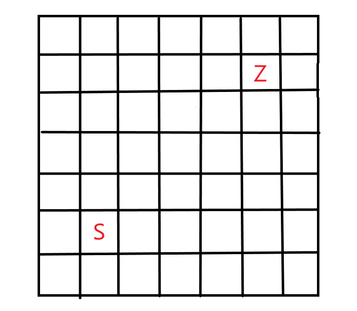
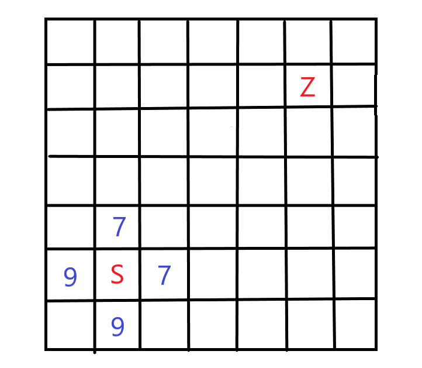
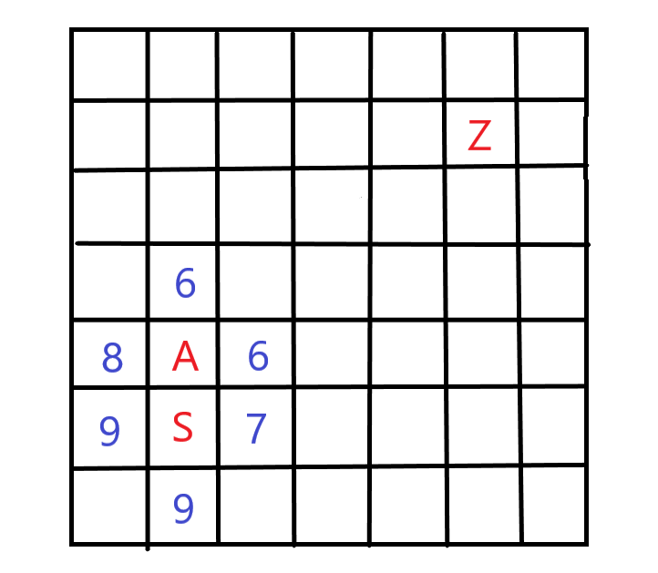

AStar
1. A星寻路简介
A星寻路算法是比较常用的寻路算法之一，在效率方面优于BFS和DFS。支持在地图上增加“花费”，可以实现同样长度的路径所需花费不同（例如山地和平原的移动花费不同），本质上是一个无向带权图的寻路。
2. 原理
假设只支持四向移动，即只能向上下左右四个方向移动。
如图，起始点为S，目标点为Z

从S点开始搜索，先计算上下左右四个点距离终点的距离（指水平距离+竖直距离），并将这四个点加入一个open队列中。
将S点放入closed队列

获取队列中距离最小的点，假设为A，以A为起点，获得周围四个点中既不在open中也不再close中的点，计算距离，并加入open中。

重复上一步骤直到终点存在open队列，则成功寻到路径。若open没有点了，则不存在路径。
3. 核心代码
Point类
1
2
3
4
5
6
7
8
9
10
11
12
13
14
15
16
17
18
19
| public class Point
{
public Point parent;
public float distance;
public int x;
public int y;
public GameObject obj;
public Point()
{
}
public Point(int x,int y)
{
this.x = x;
this.y = y;
}
}
|
变量含义如下：
parent：用于对整条路径的遍历，类似链表。
distance：距离终点的距离。
x&y：点的坐标
obj：与unity关联的游戏物体。
创建地图
1
2
3
4
5
6
7
8
9
10
11
12
13
14
15
| public void CreateMap()
{
for(int i = 0; i < 29; i++)
{
for(int j = 0; j < 20; j++)
{
Point point = new Point(i, j);
GameObject obj = Instantiate(pointPrefab);
obj.transform.SetParent(canvas.transform,false);//用于显示距离。
obj.transform.position = new Vector2(-7.16f + 0.5f * i, 4.75f - 0.5f * j);
point.obj = obj;//绑定
points.Add(point);//points是所有点的List
}
}
}
|
此函数应放到GameManager中。
Astar
1
2
3
4
5
6
7
8
9
10
11
12
13
14
15
16
17
18
19
20
21
22
23
| public void FindPath(Point from, Point to)
{
if (open.Contains(to))//判断终点是否在open列表中
return;
List<Point> around = GetAroundPoints(from);//获得周围的四个点
if (open.Contains(from))//将当前点移出open列表并加入closed列表
{
open.Remove(from);
closed.Add(from);
}
foreach (var a in around)
{
if (!open.Contains(a) && !closed.Contains(a))//如果这个点不在这两个列表中
{
a.parent = from;
a.distance = GetDistance(a, to);//计算距离的函数
a.obj.GetComponentInChildren<Text>().text = a.distance.ToString();//用于显示距离
open.Add(a);
}
}
FindPath(GetNearPoint(), to);//递归调用
}
|
最终结果为to，通过to的parent可以遍历整条路径。
4. 进阶
可以看出，以上的实现并没有体现路径的花费，只是一个等花费的寻路，若要增加路径的花费，则需要稍微改变。